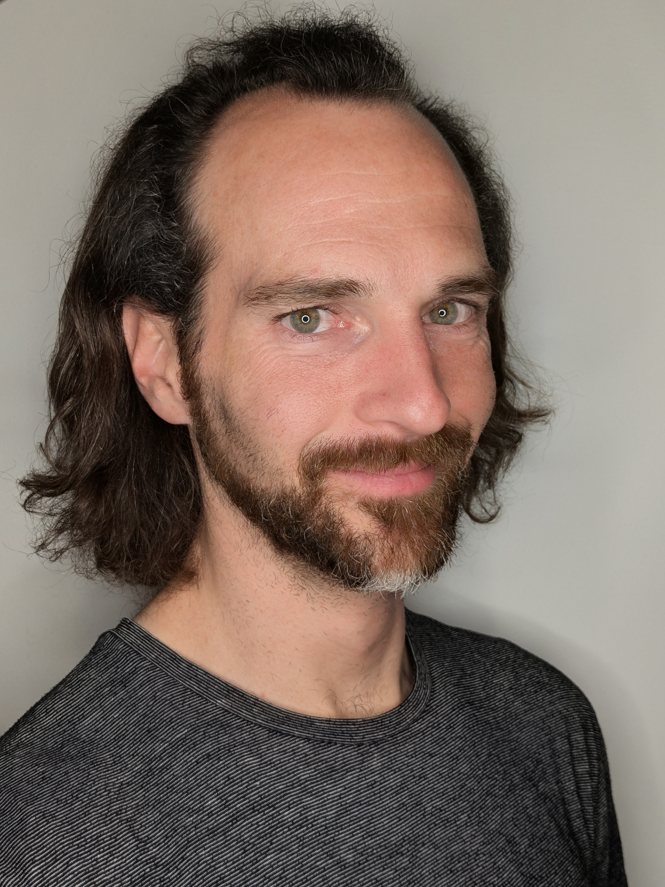

„Vom Entstören elektrischer Systeme zur Entfaltung menschlicher Potenziale.“
Aufgewachsen unter Palmen in Spanien und gereift in der Präzision Frankens, begleite ich heute Menschen auf ihrem Weg zu sich selbst. Mein Weg war kein gerader, sondern ein organischer Prozess des Verstehens – von der Materie bis zum Geist.
Während mein Umfeld stark von der Medizin geprägt war, fand ich meine Leidenschaft zunächst in der Entwicklung und Entstörung komplexer elektrischer Systeme. Viele Jahre war die Arbeit mit Mechatronik und Software im Bereich der Luftfahrt und Medizintechnik mein Fokus. Doch was ich dort lernte – das Verständnis von Strömen, Widerständen und ganzheitlichen Systemen –, lässt sich eins zu eins auf den menschlichen Körper übertragen.
Schon als Kind lernte ich Meditation, um meine eigene Unruhe zu bändigen. Später führte mich mein Weg über das Yoga zum Tantra und zum Schamanismus. Diese Welten sind für mich keine Gegensätze. Sie befruchten sich gegenseitig. Ein Ingenieur sucht nach Lösungen, ein Tantriker nach tiefer Verbindung und ein Schamane nach Heilung der Essenz. In meiner Arbeit fließt all das zusammen.
Heute lebe ich mit meiner Frau und meinem Kind in Reichenberg bei Würzburg. Nach 15 Jahren Ehe und vielen Jahren der Selbstarbeit freue ich mich darauf, mein Wissen und meine Präsenz als Werkzeug für deinen Prozess zur Verfügung zu stellen.